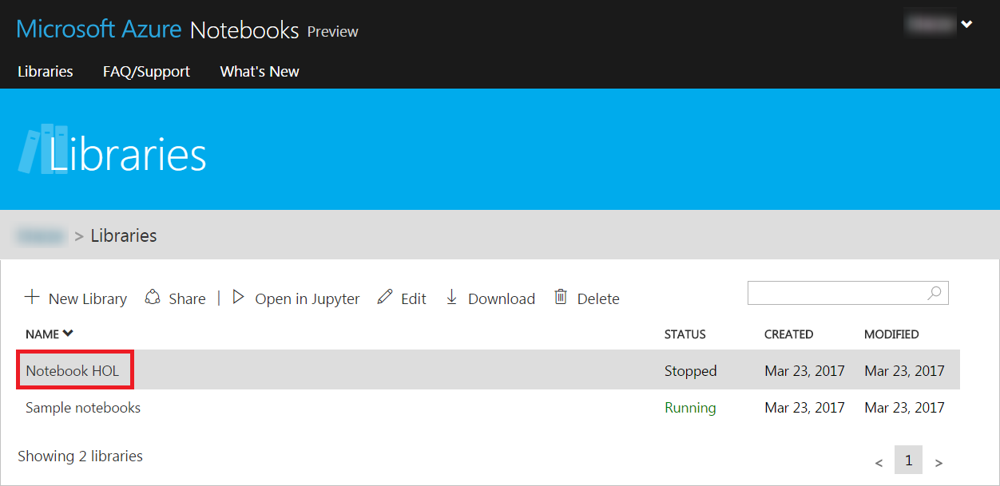
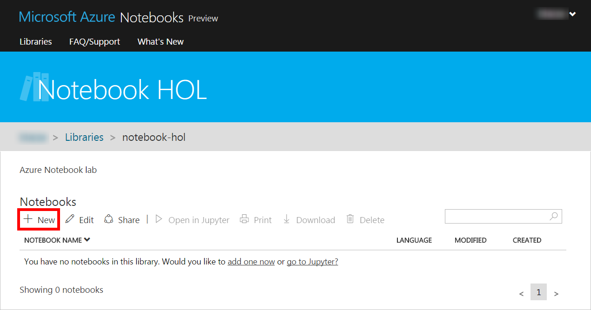
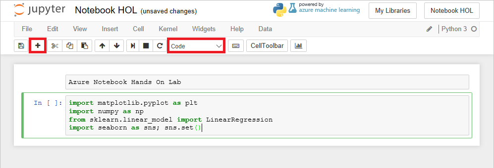
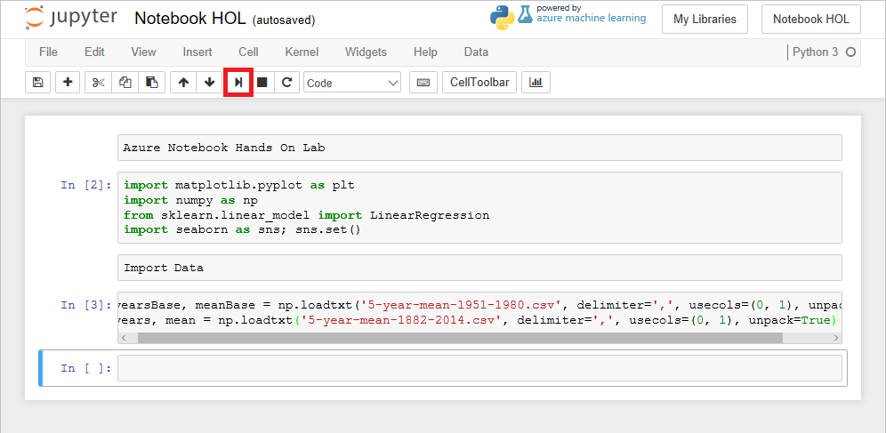
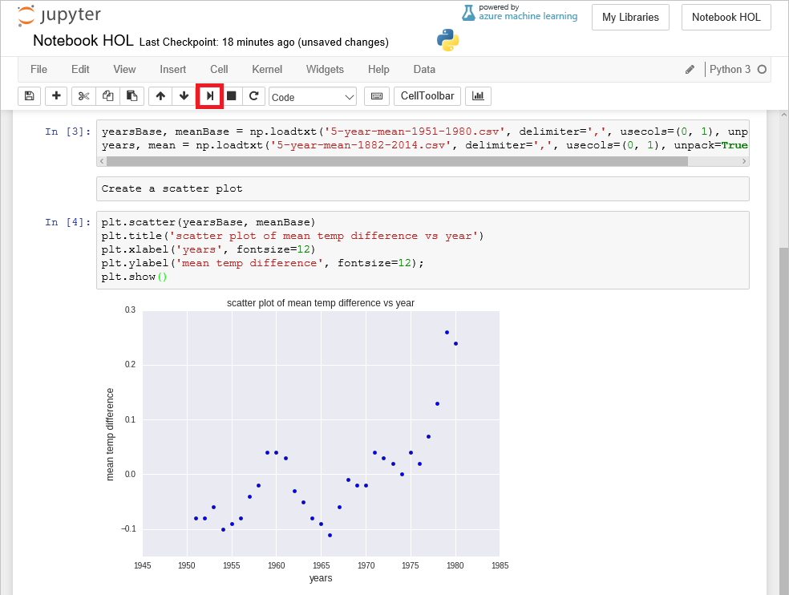
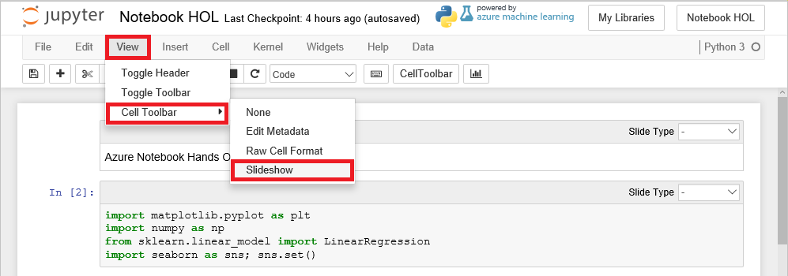
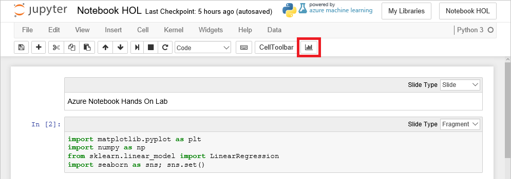
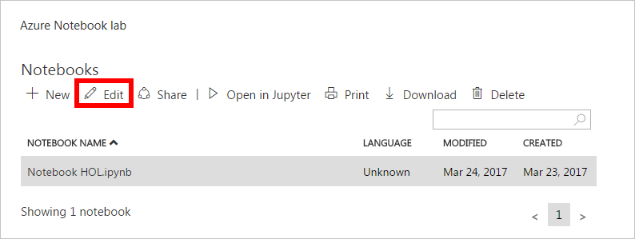
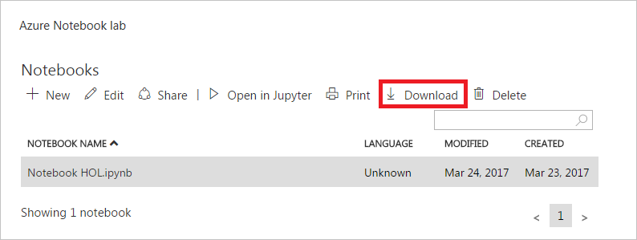

Building Interactive Notebooks with Azure Notebooks
Overview
Azure Notebooks provides a cloud-based solution for editing and running Jupyter notebooks. Jupyter is an environment based on IPython that facilitates interactive programming and data analysis using a variety of programming languages. Jupyter notebooks enjoy widespread use in research and academia for mathematical modeling, machine learning, statistical analysis, and for teaching and learning how to code.
Notebooks are composed of cells, some of which contain code that runs interactively. Code is executed by a kernel, which provides an isolated environment for the notebook to run in. The popular IPython kernel supports code written in Python, but dozens of other kernels are available supporting other languages. Azure Notebooks support Python, R, and F# out of the box. They also support the installation of the numerous packages and libraries that are commonly used in research.
Azure Notebooks provides Jupyter as a service for free, so anyone can use it. It's a convenient way to build notebooks and share them with others without having to install and manage a Jupyter server. And it's completely Web-based, making it an ideal solution for collaborating online.
Objectives
In this hands-on lab, you will learn how to:
- Create a notebook in Azure Notebooks
- Upload, manipulate, and visualize data in a notebook
- Create a slideshow from a notebook
- Share notebooks online
Prerequisites
The following are required to complete this hands-on lab:
- A Microsoft Account
- A modern Web browser
Resources
Click here to download a zip file containing the resources used in this lab. Copy the contents of the zip file into a folder on your hard disk.
Exercises
Estimated time to complete this lab: 45 minutes.
Exercise 1: Create a library and a notebook
The first order of business is to create a library and a notebook to go in it.
-
Navigate to https://notebooks.azure.com in your browser and sign in using your Microsoft account. Then click Libraries.

Navigating to the Libraries page
-
Click + New Library.

Adding a library
-
Enter "Notebook HOL" (without quotation marks) for the library name, "notebook-hol" for the library ID, and "Azure Notebook lab" for the library description. Uncheck the Public Library box, and then click Create.

Creating a library
-
Click the library you just added.

Opening the library
-
Click + New to add a notebook to the library.

Adding a notebook
-
Click the New tab. Enter "Notebook HOL.ipynb" into the box below for the notebook name and select Python 3.5 as the language. Then click the New button.

Creating a notebook
-
Click the new notebook. This will launch the notebook in Jupyter and allow you to start editing it.

Opening the notebook
You can create additional libraries and notebooks as you work with Azure Notebooks. Libraries are essentially a way of grouping related notebooks. You can create notebooks from scratch, or you can upload existing notebooks. In the next exercise, you will build a notebook from scratch and learn the basics of working with cells.
Exercise 2: Upload data and create a scatter plot
Jupyter notebooks are composed of cells. Each cell is assigned one of four types:
- Markdown for entering text in markdown format
- Code for entering code that runs interactively
- Raw NBConvert for entering data inline
- Heading for section headers
The notebook editor currently shows an empty cell. In this exercise, you will add content to that cell and add other cells to import Python packages such as NumPy, load a pair of NASA data files containing climate data, and create a scatter plot from the data.
-
In the first cell, set the cell type to Markdown and enter the "Azure Notebook Hands On Lab" into the cell itself:

Defining a markdown cell
-
Click the + button in the toolbar to add a new cell. Make sure the cell type is Code, and then enter the following Python code into the cell:
import matplotlib.pyplot as plt
import numpy as np
from sklearn.linear_model import LinearRegression
import seaborn as sns; sns.set()

Adding a code cell
-
Now click the Run button to run the code cell and import the packages specified in the import statements. Ignore any warnings that are displayed as the environment is prepared for the first time.
You can remove the warnings by selecting the code cell and running it again.

Running a code cell
-
Click Data in the menu at the top of the page, and select Upload from the drop-down menu. Then upload the files named 5-year-mean-1951-1980.csv and 5-year-mean-1882-2014.csv from the resources that accompany this lab.

Uploading data to the notebook
-
Place the cursor in the empty cell at the bottom of the notebook. Enter "Import Data" as the text and change the cell type to Markdown.
-
Now add a Code cell and paste in the following code.
yearsBase, meanBase = np.loadtxt('5-year-mean-1951-1980.csv', delimiter=',', usecols=(0, 1), unpack=True)
years, mean = np.loadtxt('5-year-mean-1882-2014.csv', delimiter=',', usecols=(0, 1), unpack=True)
-
Click the Run button to run the cell and use NumPy's loadtxt function to load the data that you uploaded. The data is now in memory and can be used by the application.

Loading the data
-
Place the cursor in the empty cell at the bottom of the notebook. Change the cell type to Markdown and enter "Create a scatter plot" as the text.
-
Add a Code cell and paste in the following code, which uses Mapplotlib to create a scatter plot.
plt.scatter(yearsBase, meanBase)
plt.title('scatter plot of mean temp difference vs year')
plt.xlabel('years', fontsize=12)
plt.ylabel('mean temp difference', fontsize=12);
plt.show()
-
Click Run to run the cell and create a scatter plot.

Scatter plot produced by Matplotlib
The data set that you loaded uses a 30-year mean between 1951 and 1980 to calculate a base temperature for that period, and then uses 5-year mean temperatures to calculate the difference between the 5-year mean and the 30-year mean for each year. The scatter plot shows the annual temperature differences.
Exercise 3: Perform linear regression with NumPy
Scatter plots offer a handy means for visualizing data, but suppose you wanted to overlay the scatter plot with a trend line showing how the data is trending over time. One way to compute such trend lines is linear regression. In this exercise, you will use NumPy to perform a linear regression and Matplotlib to draw a trend line from the data.
-
Place the cursor in the empty cell at the bottom of the notebook. Change the cell type to Markdown and enter "Perform linear regression" as the text.
-
Add a Code cell and paste in the following code. Take a moment to read the comments (the lines that begin with # signs) to understand what the code is doing.
# Creates a linear regression from the data points
m,b = np.polyfit(yearsBase, meanBase, 1)
# This is a simple y = mx + b line function
def f(x):
return m*x + b
# This generates the same scatter plot as before, but adds a line plot using the function above
plt.scatter(yearsBase, meanBase)
plt.plot(yearsBase, f(yearsBase))
plt.title('scatter plot of mean temp difference vs year')
plt.xlabel('years', fontsize=12)
plt.ylabel('mean temp difference', fontsize=12);
plt.show()
# Prints text to the screen showing the computed values of m and b
print(' y = {0} * x + {1}'.format(m, b))
plt.show()
-
Now run the cell to display a scatter plot with a regression line.

Scatter plot with regression line
From the regression line, you can see that the difference between 30-year mean temperatures and 5-year mean temperatures is increasing over time. Most of the computational work required to generate the regression line was performed by NumPy's polyfit function, which computed the values of m and b in the equation y = mx + b.
Exercise 4: Perform linear regression with scikit-learn
Another popular Python library that is widely used in the research community is scikit-learn, which excels at building machine-learning models to help extract information from data. In this exercise, you will use scikit-learn (which was already imported in Exercise 2) to compute a trend line for the NASA climate data.
-
Place the cursor in the empty cell at the bottom of the notebook. Change the cell type to Markdown and enter "Perform linear regression with scikit-learn" as the text.
-
Add a Code cell and paste in the following code.
# Pick the Linear Regression model and instantiate it
model = LinearRegression(fit_intercept=True)
# Fit/build the model
model.fit(yearsBase[:, np.newaxis], meanBase)
mean_predicted = model.predict(yearsBase[:, np.newaxis])
# Generate a plot like the one in the previous exercise
plt.scatter(yearsBase, meanBase)
plt.plot(yearsBase, mean_predicted)
plt.title('scatter plot of mean temp difference vs year')
plt.xlabel('years', fontsize=12)
plt.ylabel('mean temp difference', fontsize=12);
plt.show()
print(' y = {0} * x + {1}'.format(model.coef_[0], model.intercept_))
-
Now run the cell to display a scatter plot with a regression line.

Scatter plot with regression line computed by sckikit-learn
The output is almost identical to the output in the previous exercise. The difference is that scikit-learn did more of the work for you. Specifically, you didn't have to code a line function as you did with NumPy; scikit-learn's LinearRegression function did it for you. scikit-learn supports many different types of regression, which comes in handy when building sophisticated machine-learning models.
Exercise 5: Analyze the data with Seaborn
One of the cool things about Azure Notebooks — and Python in general — is that there are thousands of open-source libraries you can leverage to perform complex tasks without writing a lot of code. In this exercise, you will use Seaborn, a library for statistical visualization, to plot the second of the two data sets you loaded, which covers the years 1882 to 2014. Seaborn can create a regression line accompanied by a projection showing where data points should fall based on the regression with one simple function call.
-
Place the cursor in the empty cell at the bottom of the notebook. Change the cell type to Markdown and enter "Perform linear regression with Seaborn" as the text.
-
Add a Code cell and paste in the following code.
plt.scatter(years, mean)
plt.title('scatter plot of mean temp difference vs year')
plt.xlabel('years', fontsize=12)
plt.ylabel('mean temp difference', fontsize=12);
sns.regplot(yearsBase, meanBase)
plt.show()
-
Run the code cell to produce a scatter chart with a regression line and a visual representation of the range in which the data points are expected to fall.

Comparison of actual values and predicted values generated with Seaborn
Notice how the how the data points for the first 100 years conform nicely to the predicted values, but the data points from roughly 1980 forward do not. It is models such as these that lead scientists to believe that climate change is accelerating.
Exercise 6: Create a slideshow
What if you wanted to take a notebook you've created and use it in a presentation? You can use create slideshows from the cells in a notebook and play them back when it's presentation time. In this exercise, you will create a slideshow from the notebook you built in the previous exercises.
-
Scroll up to the top of the notebook. Then select View -> Cell Toolbar -> Slideshow. This will display a Slide Type drop-down in each cell for specifying how individual cells behave during a slide show.

Toggling the Slide Type display
-
Set the Slide Type for each markdown slide in the notebook to Slide. Set the Slide Type for each code cell to Fragment.

Specifying the slide type for individual cells
-
Click the Slideshow button to play the slide show.

Starting the slideshow
-
Maximize the browser window (or switch the browser to full-screen mode if your browser supports it). Then use the arrow buttons in the lower-right corner of the page (or the left and right arrows keys on the keyboard) to navigate backward and forward in the slideshow.

Viewing the slideshow
-
When you're finished, click the X in the upper-left corner of the page to end the slideshow.
Creating slideshows is easy. But what if you want to share a notebook with colleagues so they can use it, too? That is the subject of the next exercise.
Exercise 7: Share a notebook
One of the value-added features of Azure Notebooks is that it provides a cloud-based hub for sharing notebooks. In this exercise, you will share the notebook you created in previous exercises.
-
Select File -> Close and Halt to close the notebook.

Closing the notebook
-
Click Edit to edit the library.

Editing the library
-
Check the Public Library box to make the library public, and then click Save.

Making the library public
-
Click Share.

Sharing the library
-
Notebooks can be shared by links, on social media, and through email. To demonstrate, click Copy to clipboard to copy a link to the notebook to the clipboard. Then paste the link into a separate browser window and confirm that the notebook appears there. Finish up by clicking Close to close the share dialog.

Sharing by link
-
Another way to share a notebook is to download it as a .ipynb file and send the .ipynb file to whomever you wish to share it with. To download the notebook, click Download.

Downloading a notebook
Downloading .ipynb files is also useful for making local copies of your notebooks. You can even run them in other Jupyter environments if you would like because there is nothing proprietary about Azure Notebooks.
Summary
The Azure Notebooks Web site contains several sample notebooks that you can experiment with and learn from. Discover Sentiments in Tweets performs sentiment analysis on 160,000 tweets, and uses the word_cloud package to generate word clouds from the tweets. Introduction to Cognitive Toolkit is a library of notebooks that demonstrate how to use the Microsoft Cognitive Toolkit to build sophisticated machine-learning models. Check out the Azure Notebooks home page for additional sample notebooks, and use them to deepen your understanding of Jupyter and sharpen your data-science skills.
Copyright 2017 Microsoft Corporation. All rights reserved. Except where otherwise noted, these materials are licensed under the terms of the MIT License. You may use them according to the license as is most appropriate for your project. The terms of this license can be found at https://opensource.org/licenses/MIT.